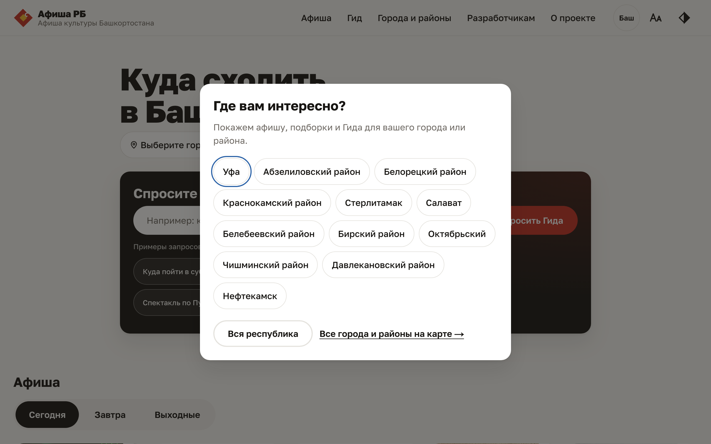
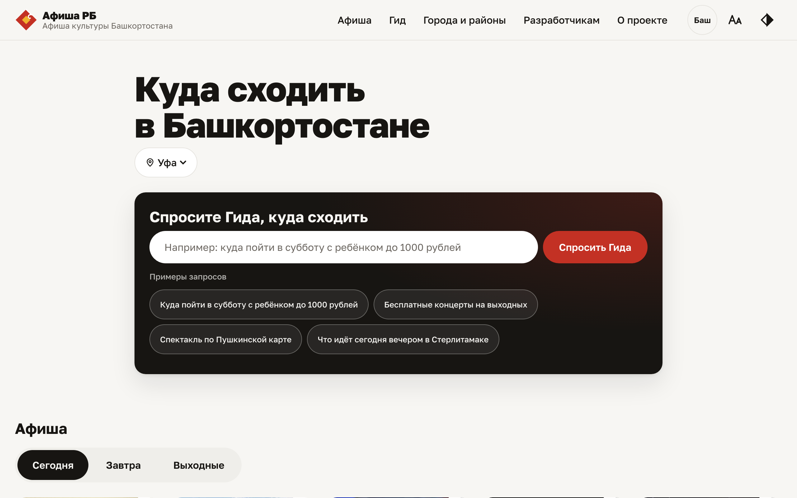
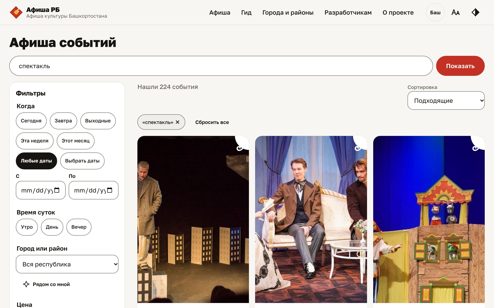
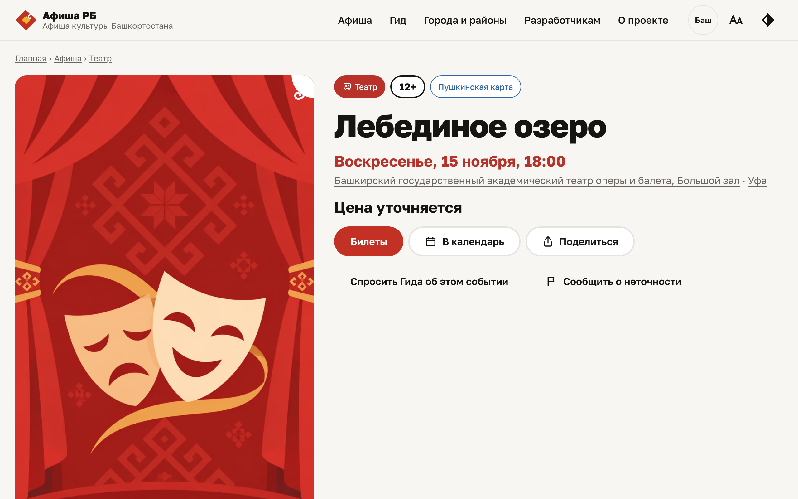
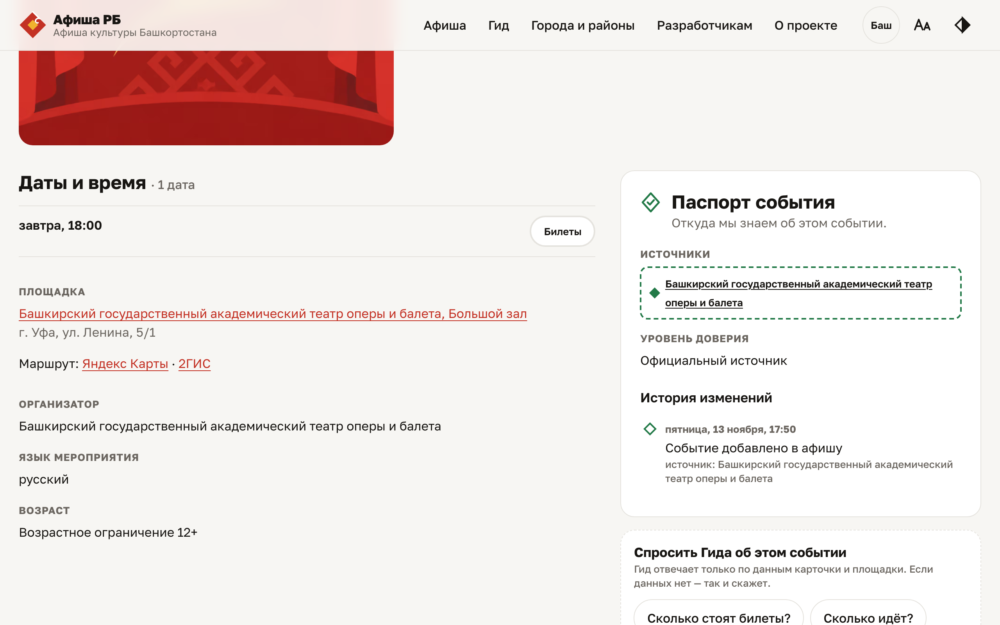
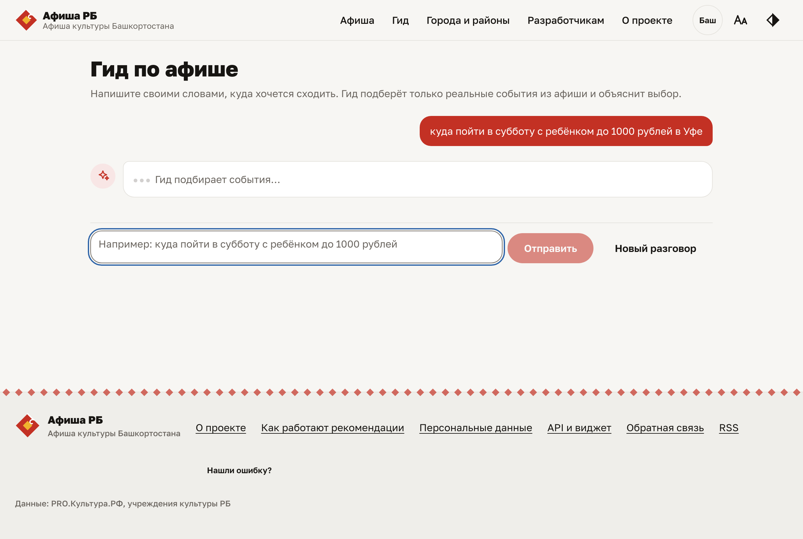
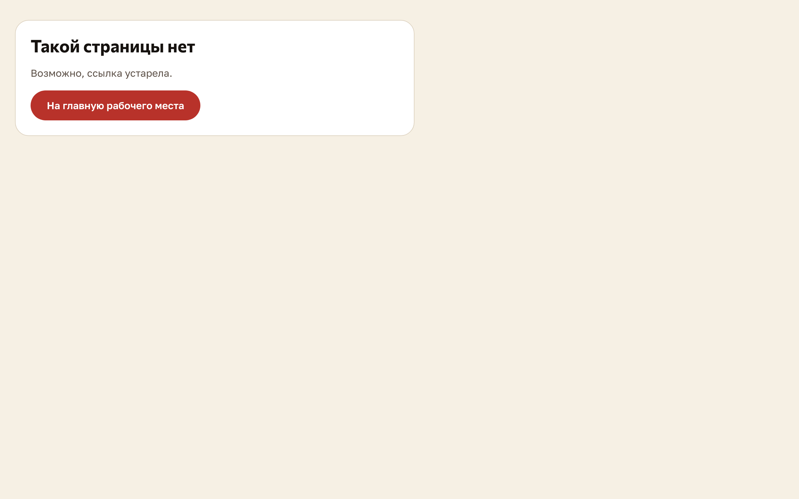
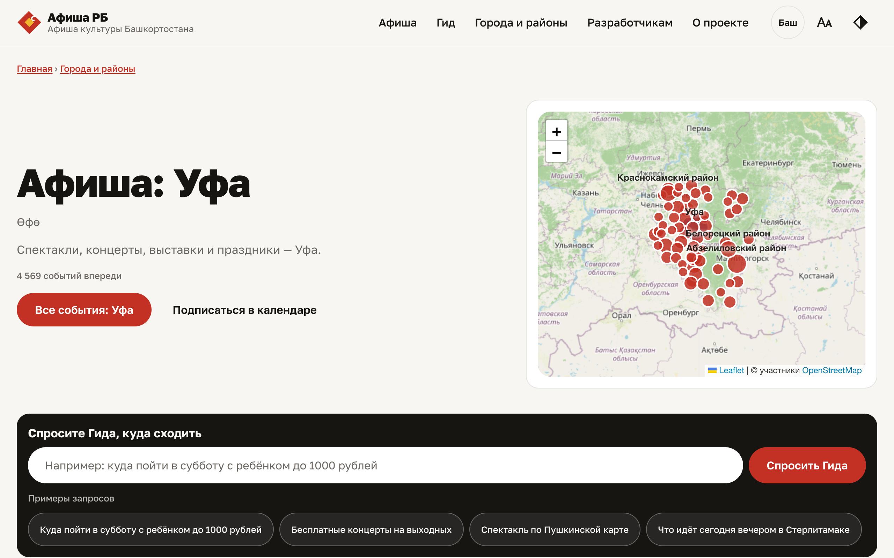

Единая достоверная афиша событий республики: сайт с ИИ-гидом, Telegram-бот, рабочее место министерства, открытый API и виджет. Живые данные, не демо.
● antihype.best — уже работаетХакатон «Кибер 102» · кейс 01 · Уфа · 13–15.11.2026 · уровень решения — 4 «Контур»
У каждого учреждения — свой сайт и свои анонсы. Афиши района нет нигде целиком.
Событие перенесли или отменили — афиша в VK и на сайте об этом не говорит.
«Куда сходить в субботу с ребёнком до 1000 рублей?» — на этот вопрос не отвечает ни один сайт.
Пушкинская карта, бесплатные события, доступная среда — тонут в разрозненных источниках
Афиша, поиск, карточки-паспорта, ИИ-гид. Русский и башкирский.
antihype.best
Афиша, подписки, дайджесты — там, где люди уже есть.
@AfishaRB102bot
«Пульс культуры», модерация дубликатов, кабинет учреждения.
admin.antihype.best
OpenAPI 3.1, ETag-кэширование, без регистрации.
api.antihype.best/docs
Конструктор сниппетов, без внешних трекеров и cookies.
antihype.best/ru/developers
Одна база, один контур качества данных, один деплой. RSS и iCal — из коробки.
Культура.РФ и Башкирский театр оперы и балета: коннекторы идемпотентны и возобновляемы. Защита источника от ботов (PoW-челлендж) решается на сервере.
Пары-кандидаты скорятся автоматически, спорные — в очередь модерации. Дубли не доходят до пользователя.
Откуда взята цена, дата, площадка — видно в «паспорте» события. Данные устарели — показываем честно.


Первый заход — окно «Где вам интересно?». Дальше ленты, подборки и Гид работают в рамках города: «нет смысла смотреть всё и сразу».


Иллюстрации для событий без фото сгенерированы моделью gpt-image-2: плоский вектор в цвете категории, лёгкий башкирский орнамент, срез ҡусҡар в углу.

Каждое событие знает, из каких источников собрано — и показывает это пользователю.
Официальный источник, подтверждено учреждением, собрано из нескольких — градации честные.
Поле за полем: что изменилось и когда. Переносы и отмены видны сразу.

Двухуровневая модель: GigaChat-2 разбирает запрос, GigaChat-2-Pro объясняет подборку. Резерв — cloud.ru и детерминированный режим правил: гид не «ложится» никогда.


Слева — «Пульс культуры» в админке: живые метрики, очередь модерации, ввод событий учреждениями. Справа — карта площадок города (Leaflet + OSM).
PostgreSQL 18 + PostGIS/pgvector · Fastify · Next.js · pg-boss · GigaChat · 10 архитектурных решений (ADR) · автосинк каждый час · TLS, Caddy · данные: PRO.Культура.РФ и учреждения культуры РБ
Сервис демонстрационный и не является официальным сервисом Министерства культуры Республики Башкортостан.